BufferStockTheory.tex
Theoretical Foundations of
Buffer Stock Saving
January 30, 2016
_____________________________________________________________________________________
Abstract
“Buffer-stock” models of saving are now common in the consumption literature.
This paper builds theoretical foundations for rigorous understanding of the main
features of such models, including the existence of a target wealth ratio and
the proposition that aggregate consumption growth equals aggregate
income growth in a small open economy populated by buffer stock savers.
-
Keywords
-
Precautionary saving, buffer stock saving, marginal
propensity to consume, permanent income hypothesis
-
JEL codes
-
D81, D91, E21
| | | (Contains software for solving and simulating the model) |
1 Introduction
Spurred by the success of Modigliani and Brumberg’s (1954) Life Cycle model
and Friedman’s (1957) Permanent Income Hypothesis, a vast literature in the
1960s and 1970s formalized the idea that household spending can be modeled as
reflecting optimal intertemporal choice. Famous papers by Schectman and
Escudero (1977) and Bewley (1977) capped this literature, providing key
building blocks for the subsequent ascendancy of dynamic stochastic optimizing
models in economics.
Given this pedigree, it is surprising that the now-standard method for
analyzing such problems, contraction mapping theory, has not yet established
some basic properties of the solution to the benchmark consumption problem
with unbounded (e.g. constant relative risk aversion) utility, uncertainty about
permanent and transitory income, and no liquidity constraints (nor has any
other method established such results). The gap exists because (except in a few
special cases) standard theorems from the contraction mapping literature
(including those in Stokey et. al. (1989) and up through the recent work of
Matkowski and Nowak (2011)) cannot be used for this problem (for reasons
explained below).
This paper fills that gap, deriving the conditions that must be satisfied for this
standard problem to have a nondegenerate solution.
The reader could be forgiven for not having noticed a gap. A large literature
solving precisely such problems has emerged following Zeldes (1989), fueled by
advances in numerical solution methods. But numerical solutions are a ‘black
box’: They make it possible to use a model without really understanding it.
Indeed, without foundational theory, it can be difficult even to be sure that a
computational solution is correct, given the notorious difficulty of writing
error-free computer code. Furthermore, without theoretical underpinnings,
the analyst often has little intuition for how results might change in
response to changes in the structure (or even the calibration) of the
model.
For example, numerical solutions typically imply the existence of a target level
of nonhuman wealth (‘cash’ for short) such that if cash exceeds the target, the
consumer will spend freely and cash will fall (in expectation), while if cash is
below the target the consumer will save and cash will rise. Carroll (1992; 1997)
showed that target saving behavior arises under plausible parameter values for
both infinite and finite horizon models. Gourinchas and Parker (2002) estimate
the model using household data and conclude that for the mean household the
buffer-stock phase of life lasts from age 25 until around age 40-45; using
the same model with different data Cagetti (2003) finds target saving
behavior into the 50s for the median household. But none of these papers
provides a rigorous delineation of the circumstances under which target
saving will emerge or an analytical explanation for why such behavior is
optimal.
This paper provides the analytical foundations for target saving and many
other results that have become familiar from the numerical literature. All
theoretical conclusions are paired with numerically computed illustrations (using
software available on the author’s website), providing an integrated framework
for understanding buffer-stock saving.
The paper proceeds in three parts.
The first part specifies the conditions required for the problem to define a
unique limiting consumption function. The conditions turn out to strongly
resemble those required for the liquidity constrained perfect foresight model to
have a solution; that parallel is explored and explained. Next, some limiting
properties are derived for the consumption function as cash approaches
infinity and as it approaches its lower bound, and the theorem asserting
that the problem defines a contraction mapping is proven. Finally, a
related class of commonly-used models (exemplified by Deaton (1991))
is shown to constitute a particular limit of this paper’s more general
model.
The next section examines five key properties of the model. First, as cash
approaches infinity the expected growth rate of consumption and the marginal
propensity to consume (MPC) converge to their values in the perfect foresight
case. Second, as cash approaches zero the expected growth rate of consumption
approaches infinity, and the MPC approaches a simple analytical limit. Third, if
the consumer is sufficiently ‘impatient’ (in a particular sense), a unique target
cash-to-permanent-income ratio will exist. Fourth, at the target cash
ratio, the expected growth rate of consumption is slightly less than the
expected growth rate of permanent noncapital income. Finally, the expected
growth rate of consumption is declining in the level of cash. The first four
propositions are proven under general assumptions about parameter
values; the last is shown to hold if there are no transitory shocks, but
may fail in extreme cases if there are both transitory and permanent
shocks.
Szeidl (2012) has recently proven that such an economy will be characterized by
stable invariant distributions for the consumption ratio, the wealth ratio, and other
variables.
Using Szeidl’s result, the final section shows that even with a fixed aggregate
interest rate that differs from the time preference rate, an economy populated by
buffer stock consumers converges to a balanced growth equilibrium in which the
growth rate of aggregate consumption tends toward the (exogenous) growth rate
of aggregate permanent income. A similar proposition holds at the level of
individual households.
2 The Problem
2.1 Setup
The consumer solves an optimization problem from the current period until
the end of life at 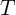 defined by the objective
where
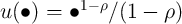 is a constant relative risk aversion utility function with
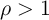.
The consumer’s initial condition is defined by market resources  (what
Deaton (1991) calls ‘cash-on-hand’) and permanent noncapital income 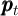.
(This will henceforth be called a ‘Friedman/Buffer Stock’ (FBS) income process
because its definition corresponds reasonably well to the descriptions in
Friedman (1957) and because such a process has been widely used in the
numerical buffer stock saving literature.)
(what
Deaton (1991) calls ‘cash-on-hand’) and permanent noncapital income 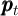.
(This will henceforth be called a ‘Friedman/Buffer Stock’ (FBS) income process
because its definition corresponds reasonably well to the descriptions in
Friedman (1957) and because such a process has been widely used in the
numerical buffer stock saving literature.)
In the usual treatment, a dynamic budget constraint (DBC) simultaneously
incorporates all of the elements that determine next period’s 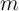 given this
period’s choices; but for the detailed analysis here, it will be useful to
disarticulate the steps so that individual ingredients can be separately
examined:
where 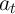 indicates the consumer’s assets at the end of period , which grow by
a fixed interest factor 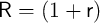 between periods, so that 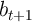 is the
consumer’s financial (‘bank’) balances before next period’s consumption
choice;
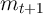 (‘market resources’ or ‘money’) is the sum of financial wealth 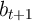
and noncapital income 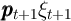 (permanent noncapital income 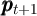
multiplied by a mean-one iid transitory income shock factor 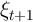; from the
perspective of period , all future transitory shocks are assumed to satisfy
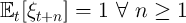). Permanent noncapital income in period 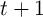 is equal
to its previous value, multiplied by a growth factor , modified by a
mean-one iid shock 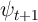, 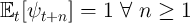 satisfying 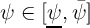 for
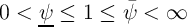 where 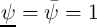 is the degenerate case with no permanent
shocks.
(Hereafter for brevity we occasionally drop time subscripts, e.g. ![E [ψ - ρ]](BufferStockTheory31x.png) signifies 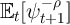.)
signifies 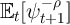.)
Following Carroll (1992), assume that in future periods 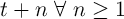 there
is a small probability 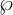 that income will be zero (a ‘zero-income event’),
where 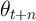 is an iid mean-one random variable (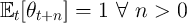)
that has a distribution satisfying 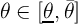 where  (degenerately 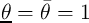). Call the cumulative distribution functions 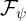 and
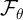 (and 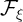 is derived trivially from (3) and ). Permanent income and
cash start out strictly positive, 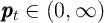 and 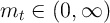, and the
consumer cannot die in debt,
(degenerately 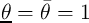). Call the cumulative distribution functions 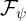 and
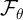 (and 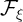 is derived trivially from (3) and ). Permanent income and
cash start out strictly positive, 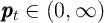 and 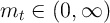, and the
consumer cannot die in debt,
The model looks more special than it is. In particular, the assumption of a
positive probability of zero-income events may seem objectionable. However,
it is easy to show that a model with a nonzero minimum value of
(motivated, for example, by the existence of unemployment insurance) can be
redefined by capitalizing the PDV of minimum income into current market
assets,
analytically transforming that model back into the model analyzed here. Also,
the assumption of a positive point mass (as opposed to positive density) for the
worst realization of the transitory shock is inessential, but simplifies and clarifies
the proofs and is a powerful aid to intuition.
This model differs from Bewley’s (1977) classic formulation in several ways.
The CRRA utility function does not satisfy Bewley’s assumption that 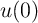 is
well defined, or that 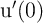 is well defined and finite, so neither the value
function nor the marginal value function will be bounded. It differs from
Schectman and Escudero (1977) in that they impose liquidity constraints and
positive minimum income. It differs from both of these in that it permits
permanent growth, and also permanent shocks to income, which a large
empirical literature finds are to be quantitatively important in micro data
(MaCurdy (1982); Abowd and Card (1989); Carroll and Samwick (1997);
Jappelli and Pistaferri (2000); Storesletten, Telmer, and Yaron (2004); Blundell,
Low, and Preston (2008)) and which the theory since Friedman (1957) suggests
are far more consequential for household welfare than are transitory fluctuations.
(The incorporation of permanent shocks also rules out application of the tools of
Matkowski and Nowak (2011) and the extensive literature cited therein).
It differs from Deaton (1991) because liquidity constraints are absent;
there are separate transitory and permanent shocks (a la Muth (1960));
and the transitory shocks here can occasionally cause income to reach
zero.
Finally, it differs from models found in Stokey et. al. (1989) because
neither liquidity constraints nor bounds on utility or marginal utility are
imposed.
2.2 The Problem Can Be Rewritten in Ratio Form
The number of relevant state variables can be reduced from two ( and 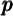) to
one 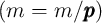 as follows. Defining nonbold variables as the boldface
counterpart normalized by 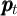 (as with 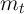), assume that value in the last
period of life is 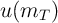, and consider the problem in the second-to-last period,
Now consider the related problem
where 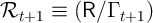 is a ‘growth-normalized’ return factor, and the
problem’s first order condition is 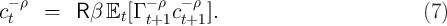
Since 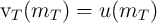, defining 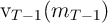 from (6) for 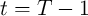, (5)
reduces to
This logic induces to all earlier periods, so that if we solve
the normalized one-state-variable problem specified in (6) we
will have solutions to the original problem for any
from:
2.3 Definition of a Nondegenerate Solution
We say that a consumption problem has a nondegenerate solution if it
defines a unique limiting consumption function whose optimal satisfies
for
every (‘Degenerate’ limits will be cases where the limiting
consumption function is either or .)
2.4 Perfect Foresight Benchmarks
The analytical solution to the perfect foresight specialization of the model,
obtained by setting and , provides a useful reference
point and defines some remaining notation.
2.4.1 Human Wealth
The dynamic budget constraint, strictly positive marginal utility, and the
can’t-die-in-debt condition (4) imply an exactly-holding intertemporal budget
constraint (IBC)
where is ‘human wealth,’ the discounted value of noncapital income, and
with a constant , human wealth will be (10)
makes plain that in order for to be finite, we must impose
the Finite Human Wealth Condition (‘FHWC’) Intuitively, for human wealth to be finite, the growth rate of noncapital income
must be smaller than the interest rate at which that income is being
discounted.
2.4.2 Unconstrained Solution
In the absence of a liquidity constraint, the consumption Euler equation holds in
every period; with , this says
where the
Old English letter ‘thorn’ represents what we will call the ‘absolute patience factor’
.
The sense in which captures patience is that if the ‘absolute impatience
condition’ (AIC) holds, the
consumer will choose to spend an amount too large to sustain (the level of
consumption must fall over time). We say that such a consumer is ‘absolutely
impatient’ (this is the key condition in Bewley (1977)).
We next define a ‘return patience factor’ that relates absolute patience to the
return factor:
so
that from which the IBC (9) implies which defines a normalized finite-horizon perfect foresight consumption function
where is the marginal propensity to consume (MPC) because it answers the
question ‘if the consumer had an extra unit of wealth, how much more would he
spend.’ Equation (15) makes plain that for the limiting MPC to be strictly
positive as goes to infinity we must impose the condition
so
that
Equation (17) thus imposes a second kind of ‘impatience:’ The consumer
cannot be so pathologically patient as to wish, in the limit as the horizon
approaches infinity, to spend nothing today out of an increase in current wealth.
This is the condition that rules out the degenerate limiting solution
. Henceforth (17) will be called the ‘return impatience condition’
or RIC, and a consumer who satisfies the condition is called ‘return
impatient.’
Given that the RIC holds, and defining limiting objects by the absence of a
time subscript (e.g., ), the limiting consumption
function will be
and
we now see that in order to rule out the degenerate limiting solution
we need to be finite so we must impose the finite human wealth
condition (11).
A final useful point is that since the perfect foresight growth factor for
consumption is , using yields the following expression for
value:
which
asymptotes to a finite value as approaches if ;
with a bit of algebra, this requirement can be shown to be equivalent to the
RIC.
Thus, the same conditions that guarantee a nondegenerate limiting consumption
function also guarantee a nondegenerate limiting value function.
2.4.3 Constrained Solution
If the liquidity constraint is ever to be relevant, it must be relevant at the lowest
possible level of market resources, , which obtains for a consumer who
enters period with . The constraint is ‘relevant’ if it prevents the
choice that would otherwise be optimal; at the constraint is relevant if
the marginal utility from spending all of today’s resources ,
exceeds the marginal utility from doing the same thing next period,
; that is, if such choices would violate the Euler equation (7):
By analogy to the return patience factor, we therefore define a ‘perfect
foresight growth patience factor’ as
and define a ‘perfect foresight growth impatience condition’ (PF-GIC)
which is equivalent to (20) (exponentiate both sides by ).
If the RIC and the FHWC hold, appendix A shows that an unconstrained
consumer behaving according to (19) would choose for all for
some . The solution to the constrained consumer’s problem in this
case is simple: For any the constraint does not bind (and will
never bind in the future) and so the constrained consumption function is
identical to the unconstrained one. In principle, if the consumer were
somehow to arrive at an the constraint would bind and the
consumer would have to consume (though such values of
are of questionable relevance because they could only be obtained by
entering the period with which the constraint rules out). We
use the accent to designate the limiting constrained consumption
function:
More useful is the case where the PF-GIC and the RIC
both hold. In this case appendix A shows that the limiting constrained
consumption function is piecewise linear, with  up to a first ‘kink
point’ at , and with discrete declines in the MPC at successively
increasing kink points . As the constrained consumption
function approaches arbitrarily close to the unconstrained , and the
marginal propensity to consume function limits to . Similarly,
the value function is nondegenerate and limits into the value function of
the unconstrained consumer. Surprisingly, this logic holds even when the finite
human wealth condition fails (denoted " class="math" > " class="oalign" >). A solution exists
because the constraint prevents the consumer from borrowing against
infinite human wealth to finance infinite current consumption. Under these
circumstances, the consumer who starts with any amount of resources
will run those resources down over time so that by some finite
number of periods in the future the consumer will reach , and
thereafter will set for eternity, a policy that will yield value
of
up to a first ‘kink
point’ at , and with discrete declines in the MPC at successively
increasing kink points . As the constrained consumption
function approaches arbitrarily close to the unconstrained , and the
marginal propensity to consume function limits to . Similarly,
the value function is nondegenerate and limits into the value function of
the unconstrained consumer. Surprisingly, this logic holds even when the finite
human wealth condition fails (denoted " class="math" > " class="oalign" >). A solution exists
because the constraint prevents the consumer from borrowing against
infinite human wealth to finance infinite current consumption. Under these
circumstances, the consumer who starts with any amount of resources
will run those resources down over time so that by some finite
number of periods in the future the consumer will reach , and
thereafter will set for eternity, a policy that will yield value
of
which will be a finite number whenever
which we call the Perfect Foresight Finite Value of Autarky Condition,
PF-FVAC, because it guarantees that a consumer who always spends all his
permanent income will have finite value (the consumer has ‘finite autarky
value’). Note that the version of the PF-FVAC in (25) implies the PF-GIC
whenever " class="math" > " class="oalign" > holds. So, if the " class="math" > " class="oalign" > holds, value
for any finite will be the sum of two finite numbers: The component due
to the unconstrained consumption choice made over the finite horizon
leading up to , and the finite component due to the value of
consuming all income thereafter. The consumer’s value function is therefore
nondegenerate.
The most peculiar possibility occurs when the RIC fails. Remarkably, the
appendix shows that although under these circumstances the FHWC must also
fail, the constrained consumption function is nondegenerate even in this case.
While it is true that , nevertheless the limiting constrained
consumption function is strictly positive and strictly increasing in .
This result interestingly reconciles the conflicting intuitions from the
unconstrained case, where " class="math" > " class="oalign" > would suggest a dengenerate limit
of while " class="math" > " class="oalign" > would suggest a degenerate limit of
.
Tables 2 and 3 (and appendix table 4) codify the key points to help the reader
keep them straight (and to facilitate upcoming comparisons with the surprisingly
parallel results in the presence of uncertainty but the absence of liquidity
constraints (also tabulated for comparison)).
2.5 Uncertainty-Modified Conditions
2.5.1 Impatience
When uncertainty is introduced, the expectation of can be rewritten as:
where Jensen’s inequality guarantees that the expectation of the inverse of the
permanent shock is strictly greater than one. It will be convenient to define the
object because this permits us to write expressions like the RHS of (26) compactly as, e.g.,
We refer to this as the ‘return compensated’ permanent shock, because it
compensates for the effect of uncertainty on the expected growth-normalized
return (in the sense implicitly defined in (26)). Note that Jensen’s inequality
implies that for nondegenerate (since by assumption).
Using this definition, we can transparently generalize the PF-GIC (22) by
defining a ‘compensated growth factor’
and
a compensated growth patience factor
and
a straightforward derivation using some of the results below yields the conclusion
that which implies that if we wish to prevent from heading to infinity
(that is, if we want to be guaranteed to be expected to fall
for some large enough value of ) we must impose a generalized
version of (22) which we call simply the ‘growth impatience condition’
(GIC):
which is stronger than the perfect foresight version (22) because .
2.5.2 Value
A consumer who spent his permanent income every period would have value
which invites the definition of a utility-compensated equivalent of the permanent
shock, which will satisfy  for and nondegenerate (and for
the preferred (though not required) case of ); defining we can
see that will be finite as approaches if
which we call the ‘finite value of autarky’ condition (FVAC) because
it is the value obtained by always consuming permanent income, and
which for nondegenerate is stronger (harder to satisfy in the sense of
requiring lower ) than the perfect foresight version (24) because .
for and nondegenerate (and for
the preferred (though not required) case of ); defining we can
see that will be finite as approaches if
which we call the ‘finite value of autarky’ condition (FVAC) because
it is the value obtained by always consuming permanent income, and
which for nondegenerate is stronger (harder to satisfy in the sense of
requiring lower ) than the perfect foresight version (24) because .
2.6 The Baseline Numerical Solution
Figure 1 depicts the successive consumption rules that apply in the last period
of life (), the second-to-last period, and various earlier periods under the
baseline parameter values listed in Table 1. (The 45 degree line is labelled as
because in the last period of life it is optimal to spend all
remaining resources.)
Table 1: Microeconomic Model Calibration
In the figure, the consumption rules appear to converge as the horizon recedes
(below we show that this appearance is not deceptive); we call the limiting
infinite-horizon consumption rule
2.7 Concave Consumption Function Characteristics
A precondition for the main proof is that the maximization problem (6)
defines a sequence of continuously differentiable strictly increasing strictly
concave functions
.
The proof of this precondition is straightforward but tedious, and so is relegated
to appendix B. For present purposes, the most important point is the following
intuition: for all periods because if the consumer spent all
available resources, he would arrive in period with balances of zero,
then might earn zero noncapital income for the rest of his life (an unbroken series
of zero-income events is unlikely but possible). In such a case, the budget
constraint and the can’t-die-in-debt condition mean that the consumer would be
forced to spend zero, incurring negative infinite utility. To avoid this
disaster, the consumer never spends everything. (This is an example of
the ‘natural borrowing constraint’ induced by a precautionary motive
(Zeldes (1989)).)
2.8 Bounds for the Consumption Functions
The consumption functions depicted in Figure 1 appear to have limiting slopes
as  and as . This section confirms that impression and derives
those slopes, which also turn out to be useful in the contraction mapping
proof.
and as . This section confirms that impression and derives
those slopes, which also turn out to be useful in the contraction mapping
proof.
Assume (as discussed above) that a continuously differentiable concave
consumption function exists in period , with an origin at , a
minimal MPC , and maximal MPC . (If these
will be  ; for earlier periods they will exist by recursion from the
following arguments.)
; for earlier periods they will exist by recursion from the
following arguments.)
For we can define  and
and the Euler equation (7) can be rewritten
and
and the Euler equation (7) can be rewritten
It is worthwhile to point out here that, although by definition
refers to average propensity to consume (‘APC’), when and ,
the two APCs are also MPCs. This is due to L’Hєpital’s Rule, because both the
denominator and the numerator will go to as and to as
(e.g. ). endCDC
Consider the first conditional expectation in (33), recalling that if then
. Since ,
is contained within bounds defined by and
both of which are finite numbers, implying that the whole
term multiplied by goes to zero as goes to zero. As the
expectation in the other term goes to (This follows from the
strict concavity and differentiability of the consumption function.) It follows that
the limiting  satisfies We can conclude that
satisfies We can conclude that
which yields a useful recursive formula for the maximal marginal propensity to
consume:
Then is a decreasing convergent sequence if
a
condition that we dub the ‘Weak Return Impatience Condition’ (WRIC) because
with it will hold more easily (for a larger set of parameter values) than
the RIC ().
Since , iterating (35) backward to infinity (because we are interested
in the limiting consumption function) we obtain:
and
we will therefore call the ‘limiting maximal MPC.’
The minimal MPC’s are obtained by considering the case where . If
the FHWC holds, then as the proportion of current and future
consumption that will be financed out of capital approaches 1. Thus, the terms
involving in (32) can be neglected, leading to a revised limiting Euler
equation
and we know from L’Hєpital’s rule that , and
so a further limit of the Euler equation is
and
the same sequence of derivations used above yields the conclusion that if the RIC
holds, then a recursive formula for the minimal marginal
propensity to consume is given by so
that is also an increasing convergent sequence, with being the
‘limiting minimal MPC.’ If the RIC does not hold, then and
so the limiting MPC is
We are now in position to observe that the optimal consumption function must
satisfy
because consumption starts at zero and is continuously differentiable (as argued
above), is strictly concave (Carroll and Kimball (1996)), and always exhibits a
slope between and (the formal proof is provided in appendix
D).
2.9 Conditions Under Which the Problem Defines a Contraction Mapping
To prove that the consumption rules converge, we need to show that the problem
defines a contraction mapping. This cannot be proven using the standard
theorems in, say, Stokey et. al. (1989), which require marginal utility to be
bounded over the space of possible values of , because the possibility
(however unlikely) of an unbroken string of zero-income events for the
remainder of life means that as approaches zero must approach
zero (see the discussion in 2.7); thus, marginal utility is unbounded.
Although a recent literature examines the existence and uniqueness of
solutions to Bellman equations in the presence of ‘unbounded returns’ (see
Matkowski and Nowak (2011) for a recent contribution), the techniques in
that literature cannot be used to solve the problem here because the
required conditions are violated by a problem that involves permanent
shocks.
Fortunately, Boyd (1990) provides a weighted contraction mapping theorem
that can be used. To use Boyd’s theorem we need
Definition 1. Consider any function where is the
space of continuous functions from to . Suppose
with and . Then is -bounded if the -norm of
,
is finite.
For defined as the set of functions in that are
-bounded; , ,  , and as examples of -bounded functions; and
using to indicate the function that returns zero for any argument,
Boyd (1990) proves the following.
, and as examples of -bounded functions; and
using to indicate the function that returns zero for any argument,
Boyd (1990) proves the following.
Boyd’s Weighted Contraction Mapping Theorem. Let such
that
Then defines a contraction with a unique fixed point.
For our problem, take as and as , and define
Using this, we introduce the mapping
,
We can show that our operator satisfies the conditions that Boyd
requires of his operator , if we impose two restrictions on parameter
values. The first restriction is the WRIC necessary for convergence of the
maximal MPC, equation (36) above. A more serious restriction is the
utility-compensated Finite Value of Autarky condition, equation (30). (We
discuss the interpretation of these restrictions in detail in section 2.11 below.)
Imposing these restrictions, we are now in position to state the central theorem
of the paper.
Theorem 1. is a contraction mapping if the restrictions on parameter
values (36) and (30) are true.
The proof is cumbersome, and therefore relegated to appendix D. Given that
the value function converges, appendix D.3 shows that the consumption
functions converge.
2.10 The Liquidity Constrained Solution as a Limit
This section shows that a related problem commonly considered in the literature
(e.g. with a simpler income process by Deaton (1991)), with a liquidity
constraint and a positive minimum value of income, is the limit of the problem
considered here as the probability of the zero-income event approaches
zero.
Formally, suppose we change the description of the problem by making the
following two assumptions:
and
we designate the solution to this consumer’s problem . We will henceforth
refer to this as the problem of the ‘restrained’ consumer (and, to avoid a
common confusion, we will refer to the consumer as ‘constrained’ only in
circumstances when the constraint is actually binding).
Redesignate the consumption function that emerges from our original problem
for a given fixed as where we separate the arguments by a
semicolon to distinguish between , which is a state variable, and , which is
not. The proposition we wish to demonstrate is
We will first examine the problem in period , then argue that the
desired result propagates to earlier periods. For simplicity, suppose that the
interest, growth, and time-preference factors are and there are
no permanent shocks, ; the results below are easily generalized to the
full-fledged version of the problem.
The solution to the restrained consumer’s optimization problem can be
obtained as follows. Assuming that the consumer’s behavior in period is
given by (in practice, this will be ), consider the
unrestrained optimization problem
As usual, the envelope theorem tells us that so the
expected marginal value of ending period with assets can be defined
as
and
the solution to (42) will satisfy
therefore answers the question “With what level of assets
would the restrained consumer like to end period  if the constraint
did not exist?” (Note that the restrained consumer’s income
process remains different from the process for the unrestrained consumer so
long as .) The restrained consumer’s actual asset position will be
if the constraint
did not exist?” (Note that the restrained consumer’s income
process remains different from the process for the unrestrained consumer so
long as .) The restrained consumer’s actual asset position will be
reflecting the inability of the restrained consumer to spend more than current
resources, and note (as pointed out by Deaton (1991)) that is
the cusp value of at which the constraint makes the transition between
binding and non-binding in period  .
.
Analogously to (43), defining
the
Euler equation for the original consumer’s problem implies with solution . Now note that for any fixed  ,
. Since the LHS of (43) and (45) are identical, this
means that . That is, for any fixed value of
such that the consumer subject to the restraint would voluntarily
choose to end the period with positive assets, the level of end-of-period assets for
the unrestrained consumer approaches the level for the restrained consumer
as . With the same and the same , the consumers must
have the same , so the consumption functions are identical in the
limit.
,
. Since the LHS of (43) and (45) are identical, this
means that . That is, for any fixed value of
such that the consumer subject to the restraint would voluntarily
choose to end the period with positive assets, the level of end-of-period assets for
the unrestrained consumer approaches the level for the restrained consumer
as . With the same and the same , the consumers must
have the same , so the consumption functions are identical in the
limit.
Now consider values for which the restrained consumer is
constrained. It is obvious that the baseline consumer will never choose
because the first term in (44) is , while is
finite (the marginal value of end-of-period assets approaches infinity as assets
approach zero, but the marginal utility of consumption has a finite limit for
). The subtler question is whether it is possible to rule out strictly
positive for the unrestrained consumer.
The answer is yes. Suppose, for some that the unrestrained
consumer is considering ending the period with any positive amount of assets
. For any such we have that . But by
assumption we are considering a set of circumstances in which ,
and we showed earlier that . So, having
assumed , we have proven that the consumer would optimally
choose , which is a contradiction. A similar argument holds for
.
These arguments demonstrate that for any ,
which is the period version of (42). But given equality of the period
consumption functions, backwards recursion of the same arguments
demonstrates that the limiting consumption functions in previous periods are
also identical to the constrained function.
Note finally that another intuitive confirmation of the equivalence between the
two problems is that our formula (37) for the maximal marginal propensity to
consume satisfies
which makes sense because the marginal propensity to consume for a
constrained restrained consumer is 1 by our definitions of ‘constrained’ and
‘restrained.’
2.11 Discussion of Parametric Restrictions
2.11.1 The RIC
In the perfect foresight unconstrained problem (section 2.4.2), the RIC was
required for existence of a nondegenerate solution. It is surprising, therefore, that
in the presence of uncertainty, the RIC is neither necessary nor sufficient for a
nondegenerate solution to exist.
We thus begin our discussion by asking what features the problem must exhibit
(given the FVAC) if the RIC fails (that is, :
but
since and (because we have assumed ), this can
hold only if ; that is, given the FVAC, the RIC can fail only if
human wealth is unbounded. Unbounded human wealth is permitted
here, as in the perfect foresight liquidity constrained problem. But, from
equation (38), an implication of " class="math" > " class="oalign" > is that . Thus,
interestingly, the presence of uncertainty both permits unlimited human wealth
and at the same time prevents that unlimited wealth from resulting in
infinite consumption. That is, in the presence of uncertainty, pathological
patience (which in the perfect foresight model with finite wealth results
in consumption of zero) plus infinite human wealth (which the perfect
foresight model rules out because it leads to infinite consumption) combine
here to yield a unique finite limiting level of consumption for any finite
value of . Note the close parallel to the conclusion in the perfect
foresight liquidity constrained model in the PF-GIC," class="math" > " class="oalign" > case (for
detailed analysis of this case see the appendix). There, too, the tension
between infinite human wealth and pathological patience was resolved
with a nondegenerate consumption function whose limiting MPC was
zero.
2.11.2 The WRIC
The ‘weakness’ of the additional requirement for contraction, the weak RIC, can
be seen by asking ‘under what circumstances would the FVAC hold but the
WRIC fail?’ Algebraically, the requirement is
If there were no conceivable parameter values that could satisfy both of these
inequalities, the WRIC would have no force; it would be redundant. And if we
require , the WRIC is indeed redundant because now , so
that the RIC (and WRIC) must hold.
But neither theory nor evidence demands that we assume . We can
therefore approach the question of the WRIC’s relevance by asking just how low
must be for the condition to be relevant. Suppose for illustration that
, , and  . In that case (47) reduces
to
. In that case (47) reduces
to
but
since by assumption, the binding requirement is that so
that for example if we would need (that is, a
perpetual riskfree rate of return of worse than -90 percent a year) in
order for the WRIC to bind. Thus, the relevance of the WRIC is indeed
“Weak.”
Perhaps the best way of thinking about this is to note that the space of
parameter values for which the WRIC is relevant shrinks out of existence as
, which section 2.10 showed was the precise limiting condition under
which behavior becomes arbitrarily close to the liquidity constrained solution (in
the absence of other risks). On the other hand, when , the consumer has
no noncapital income (so that the FHWC holds) and with the WRIC is
identical to the RIC; but the RIC is the only condition required for a
solution to exist for a perfect foresight consumer with no noncapital
income. Thus the WRIC forms a sort of ‘bridge’ between the liquidity
constrained and the unconstrained problems as moves from 0 to
1.
2.11.3 The GIC
If both the GIC and the RIC hold, the arguments above establish that the
limiting consumption function asymptotes to the consumption function for the
perfect foresight unconstrained function. The more interesting case is where the
GIC fails.
A solution that satisfies the combination FVAC and " class="math" > " class="oalign" > is depicted in
Figure 2. The consumption function is shown along with the
locus that identifies the ‘sustainable’ level of spending at which
is expected to remain unchanged. The diagram suggests a fact that is
confirmed by deeper analysis: Under the depicted configuration of
parameter values (see the software archive for details), the consumption
function never reaches the locus; indeed, when the RIC
holds but the GIC does not, the consumption function’s limiting slope
is shallower than that of the sustainable consumption locus
,
so the gap between the two actually increases with in the limit. That is,
although a nondegenerate consumption function exists, a target level of does
not (or, rather, the target is  ), because no matter how wealthy a
consumer becomes, he will always spend less than the amount that would keep
stable (in expectation).
), because no matter how wealthy a
consumer becomes, he will always spend less than the amount that would keep
stable (in expectation).
For the reader’s convenience, Tables 2 and 3 present a summary of the
connections between the various conditions in the presence and the absence of
uncertainty.
Table 2: Definitions and Comparisons of Conditions
Table 3: Sufficient Conditions for Nondegenerate Solution
For feasible , limiting consumption function defines unique value of satisfying
. RIC, FHWC are necessary as well as sufficient. Solution also exists for " class="math" > " class="oalign" >
and RIC, but is identical to the unconstrained model’s solution for feasible .
3 Analysis of the Converged Consumption Function
Figures 3 and 4a,b capture the main properties of the converged
consumption rule when the RIC, GIC, and FHWC all
hold.
Figure 3 shows the expected consumption growth factor for a
consumer behaving according to the converged consumption rule, while
Figures 4a,b illustrate theoretical bounds for the consumption function and the
marginal propensity to consume.
Five features of behavior are captured, or suggested, by the figures. First, as
the expected consumption growth factor goes to , indicated by
the lower bound in Figure 3, and the marginal propensity to consume
approaches  (Figure 4), the same as the perfect foresight
MPC.
Second, as the consumption growth factor approaches (Figure 3)
and the MPC approaches (Figure 4). Third (Figure 3), there
is a target cash-on-hand-to-income ratio such that if then
, and (as indicated by the arrows of motion on the
curve), the model’s dynamics are ‘stable’ around the target in the sense that if
then cash-on-hand will rise (in expectation), while if , it will
fall (in expectation). Fourth (Figure 3), at the target , the expected rate of
growth of consumption is slightly less than the expected growth rate of
permanent noncapital income. The final proposition suggested by Figure 3 is
that the expected consumption growth factor is declining in the level of the
cash-on-hand ratio . This turns out to be true in the absence of permanent
shocks, but in extreme cases it can be false if permanent shocks are
present.
(Figure 4), the same as the perfect foresight
MPC.
Second, as the consumption growth factor approaches (Figure 3)
and the MPC approaches (Figure 4). Third (Figure 3), there
is a target cash-on-hand-to-income ratio such that if then
, and (as indicated by the arrows of motion on the
curve), the model’s dynamics are ‘stable’ around the target in the sense that if
then cash-on-hand will rise (in expectation), while if , it will
fall (in expectation). Fourth (Figure 3), at the target , the expected rate of
growth of consumption is slightly less than the expected growth rate of
permanent noncapital income. The final proposition suggested by Figure 3 is
that the expected consumption growth factor is declining in the level of the
cash-on-hand ratio . This turns out to be true in the absence of permanent
shocks, but in extreme cases it can be false if permanent shocks are
present.
3.1 Limits as
Define
which is the solution to an infinite-horizon problem with no noncapital
income ( ); clearly , since allowing
the possibility of future noncapital income cannot reduce current
consumption.
); clearly , since allowing
the possibility of future noncapital income cannot reduce current
consumption.
Assuming the FHWC holds, the infinite horizon perfect foresight solution (19)
constitutes an upper bound on consumption in the presence of uncertainty, since
Carroll and Kimball (1996) show that the introduction of uncertainty strictly
decreases the level of consumption at any .
Thus, we can write
But
so
as , and the continuous differentiability and strict
concavity of therefore implies
because any other fixed limit would eventually lead to a level of consumption
either exceeding or lower than .
Figure 4 confirms these limits visually. The top plot shows the converged
consumption function along with its upper and lower bounds, while the lower
plot shows the marginal propensity to consume.
Next we establish the limit of the expected consumption growth factor as
:
But
and
while
because
and which goes to zero as goes to
infinity.
Hence we have
so as cash goes to infinity, consumption growth approaches its value in the
perfect foresight model.
This argument applies equally well to the problem of the restrained consumer,
because as approaches infinity the constraint becomes irrelevant (assuming
the FHWC holds).
3.2 Limits as
Now consider the limits of behavior as gets arbitrarily small.
Equation (37) shows that the limiting value of is
Defining as before we have
Now using the continuous differentiability of the consumption function along
with L’Hєpital’s rule, we have
Figure 4 confirms that the numerical solution method obtains this limit for the
MPC as approaches zero.
For consumption growth, we have
where the second-to-last line follows because is
positive, and the last line follows because the minimum possible realization of
is so the minimum possible value of expected next-period consumption is
positive.
3.3 There Exists Exactly One Target Cash-on-Hand Ratio, which is
Stable
Define the target cash-on-hand-to-income ratio as the value of such
that
where the accent is meant to invoke the fact that this is the value that other
’s ‘point to.’
We prove existence by arguing that is continuous on  ,
and takes on values both above and below 1, so that it must equal 1 somewhere
by the intermediate value theorem.
,
and takes on values both above and below 1, so that it must equal 1 somewhere
by the intermediate value theorem.
Specifically, the same logic used in section 3.2 shows that .
The limit as goes to infinity is
where the last line is guaranteed by our imposition of the GIC (29).
Stability means that in a local neighborhood of , values of above
will result in a smaller ratio of than at . That is, if
then . This will be true if
at
. But which will be negative if its numerator is negative. Define as the
expectation of the numerator,
The target level of market resources satisfies
At the target, equation (49) is
Substituting for the first term in this expression using (50) gives
where the step introducing the inequality imposes the fact that which
is an implication of the concavity of the consumption function.
We have now proven that some target must exist, and that at any such
the solution is stable. Nothing so far, however, rules out the possibility that
there will be multiple values of that satisfy the definition (48) of a
target.
Multiple targets can be ruled out as follows. Suppose there exist multiple
targets; these can be arranged in ascending order and indexed by an integer
superscript, so that the target with the smallest value is, e.g., . The
argument just completed implies that since is continuously
differentiable there must exist some small such that for
. (Continuous differentiability of follows from the
continuous differentiability of .)
Now assume there exists a second value of satisfying the definition of a
target, . Since is continuous, it must be approaching 1 from
below as , since by the intermediate value theorem it could not have
gone above 1 between and without passing through 1, and by the
definition of it cannot have passed through 1 before reaching . But
saying that is approaching 1 from below as implies
that
at
. However, we just showed above that, under our assumption that the
GIC holds, precisely the opposite of equation (51) must hold for any that
satisfies the definition of a target. Thus, assuming the existence of more than one
target implies a contradiction.
The foregoing arguments rely on the continuous differentiability of , so
the arguments do not directly go through for the restrained consumer’s problem
in which the existence of liquidity constraints can lead to discrete changes in
the slope at particular values of . But we can use the fact
that the restrained model is the limit of the baseline model as to
conclude that there is likely a unique target cash level even in the restrained
model.
If consumers are sufficiently impatient, the limiting target level in the
restrained model will be . That is, if a consumer starting with
will save nothing, , then the target level of in the
restrained model will be 1; if a consumer with would choose to save
something, then the target level of cash-on-hand will be greater than the
expected level of income.
3.4 Expected Consumption Growth at Target Is Less than Expected
Permanent Income Growth
In Figure 3 the intersection of the target cash-on-hand ratio locus at with
the expected consumption growth curve lies below the intersection with the
horizontal line representing the growth rate of expected permanent income. This
can be proven as follows.
Strict concavity of the consumption function implies that if
then
and since and it is clear that
cov which implies that the entire term added to in (52) is
negative, as required.
3.5 Expected Consumption Growth Is a Declining Function of (or Is
It?)
Figure 3 depicts the expected consumption growth factor as a strictly
declining function of the cash-on-hand ratio. To investigate this, define
and
the proposition in which we are interested is
or differentiating through the expectations operator, what we want is
Henceforth indicating appropriate arguments by the corresponding
subscript (e.g. ), since , the portion
of the LHS of equation (53) in brackets can be manipulated to yield
Now differentiate the Euler equation with respect to :
but
since we can see from (55) that (53) is equivalent to which, using (54), will be true if which in turn will be true if both and
The latter proposition is obviously true under our assumption . The
former will be true if
The two shocks cause two kinds of variation in . Variations due to
satisfy the proposition, since a higher draw of both reduces and
reduces the marginal propensity to consume. However, permanent shocks have
conflicting effects. On the one hand, a higher draw of will reduce ,
thus increasing both and . On the other hand, the term is
multiplied by , so the effect of a higher  could be to decrease the
first term in the covariance, leading to a negative covariance with the second
term. (Analogously, a lower permanent shock
could be to decrease the
first term in the covariance, leading to a negative covariance with the second
term. (Analogously, a lower permanent shock  can also lead a negative
correlation.)
can also lead a negative
correlation.)
4 The Aggregate and Idiosyncratic Relationship Between Consumption
Growth and Income Growth
This section examines the behavior of large collections of buffer-stock consumers
with identical parameter values. Such a collection can be thought of as either a
subset of the population within a single country (say, members of a given
education or occupation group), or as the whole population in a small open
economy. We will continue to take the aggregate interest rate as exogenous and
constant. It is also possible, and only slightly more difficult, to solve for the
steady-state of a closed-economy version of the model where the interest rate is
endogenous.
Formally, we assume a continuum of ex ante identical households on
the unit interval, with constant total mass normalized to one and
indexed by , all behaving according to the model specified
above.
4.1 Convergence of the Cross-Section Distribution
Szeidl (2012) proves that such a population will be characterized
by an invariant distribution of that induces invariant
distributions for and ; designate these , , and
.
Szeidl’s proof, however, does not yield any sense of how quickly convergence
occurs, which in principle depends on all of the parameters of the model as well
as the initial conditions. To build intuition, Figure 5 supplies an example in
which a population begins with a particularly simple distribution that is far from
the invariant one:
which would characterize a population in which all assets had been
wiped out immediately before the receipt of period 1’s noncapital
income.
The figure plots the distributions of (for technical reasons, this
is slightly better than plotting ) at the ends of 1, 4, 10, and 40
periods.
The figure illustrates the fact that, under these parameter values, convergence
to the invariant distribution has largely been accomplished within 10 periods.
By 40 periods, the distribution is indistinguishable from the invariant
distribution.
4.2 Consumption and Income Growth at the Household Level
It is useful to define the operator which yields the mean value of its
argument in the population, as distinct from the expectations operator
which represents beliefs about the future.
An economist with a microeconomic dataset could calculate the average
growth rate of idiosyncratic consumption, and would find
where
and the last equality follows because the invariance of means that
.
4.3 Growth Rates of Aggregate Income and Consumption
Attanasio and Weber (1995) point out that concavity of the consumption function
(or other nonlinearities) can imply that it is quantitatively important to distinguish
between the growth rate of average consumption and the average growth rate of
consumption.
We have just examined the average growth rate; we now examine the growth
rate of the average.
Using capital letters for aggregate variables, the growth factor for aggregate
income is given by:
because of the independence assumptions we have made about and
.
Aggregate assets are:
where designates the mean level of permanent income across all
individuals, and we are assuming that was distributed according to
the invariant distribution with a mean value of Since permanent
income grows at mean rate while the distribution of is invariant, if
we normalize to one we will similarly have for any period
Unfortunately, Szeidl (2012)’s proof of the invariance of does not yield
the information about how the cross-sectional covariance between and
evolves required to show that the covariance term grows by a factor smaller than
; if that were true, its relative size would shrink to zero over time. (A proof
that the covariance shrinks fast enough would mean that the term could be
neglected).
The desired result can be proven if there are no permanent shocks; see
appendix E for that proof, along with a discussion of the characteristics of a
covariance term that prevents proof in the general case with both transitory and
permanent shocks.
A wide range of simulation experiments confirms that the role of that
covariance term is more an irritating theoretical curiosum than an important
practical consideration. An example is given in Figure 6, which plots
for the economy whose converging CDFs were depicted in Figure 5. After the 40
periods of simulation that generated CDFs plotted in 5, we conduct an
experiment designed to flush out the role of the annoying covariance term: We
reset the level of permanent income to be identical for all consumers (‘the
revolution’):
and
we redistribute cash among consumers in such a way as to leave each consumer
with the same value of  that they would have had in the absence of the
revolution. This leaves us with the same distribution of as before the
revolution, but no covariance between and
that they would have had in the absence of the
revolution. This leaves us with the same distribution of as before the
revolution, but no covariance between and  .
.
The effect on aggregate consumption growth of even such an extreme
revolution in covariance is small, and dissipates immediately (no effect is visible
after the period of revolution itself). This experiment is representative of many
that suggest that the practical effects of time-variaton in the covariance between
and are negligible.
5 Conclusions
This paper provides theoretical foundations for many characteristics of buffer
stock saving models that have heretofore been observed in simulations but not
proven. Perhaps the most important such proposition is the existence of a
target cash-to-permanent-income ratio toward which actual cash will
tend.
Another contribution is provision a set of tools for numerical solution and
simulation (available on the author’s web page) that confirm and illustrate the
theoretical propositions. These programs demonstrate how the incorporation of
the paper’s theoretical results can make numerical solution algorithms more
efficient and simpler. A goal of the paper has been to make these tools accessible
and easy to use while incorporating the full rigor of the theoretical results in the
structure.
Appendices
A Perfect Foresight Liquidity Constrained Solution
This appendix taxonomizes the characteristics of the limiting consumption
function under perfect foresight in the presence of a liquidity constraint
requiring under various conditions. Results are summarized in
table 4.
Table 4: Taxonomy of Liquidity Constrained Model Outcomes
Conditions are applied from left to right; for example, the second and third rows indicate conclusions in the
case where " class="math" > " class="oalign" >
and RIC both hold, while the fourth row indicates that when the PF-GIC and the
RIC both fail, the consumption function is degenerate; the next row indicates that whenever the PF-GIC
holds, the constraint will bind in finite time.
A.1 If PF-GIC Fails
A consumer is ‘growth patient’ if the perfect foresight growth impatience condition
fails ( " class="math" > " class="oalign" >, ). Under " class="math" > " class="oalign" > the constraint does not bind at
the lowest feasible value of because  implies that spending
everything today (setting ) produces lower marginal utility than is
obtainable by reallocating a marginal unit of resources to the next period at return
implies that spending
everything today (setting ) produces lower marginal utility than is
obtainable by reallocating a marginal unit of resources to the next period at return
 :
:
Similar logic shows that under these circumstances the constraint will never
bind for an unconstrained consumer with a finite horizon of periods, so such
a consumer’s consumption function will be the same as for the unconstrained
case examined in the main text.
If the RIC fails () while the finite human wealth condition holds, the
limiting value of this consumption function as is the degenerate function
If the RIC fails and the FHWC fails, human wealth limits to so the
consumption function limits to either or depending on
the relative speeds with which the MPC approaches zero and human wealth approaches
.
Thus, the requirement that the consumption function be nondegenerate
implies that for a consumer satisfying  " class="math" > " class="oalign" > we must impose the RIC
(and the FHWC can be shown to be a consequence of " class="math" > " class="oalign" > and RIC). In
this case, the consumer’s optimal behavior is easy to describe. We can calculate
the point at which the unconstrained consumer would choose from (19):
" class="math" > " class="oalign" > we must impose the RIC
(and the FHWC can be shown to be a consequence of " class="math" > " class="oalign" > and RIC). In
this case, the consumer’s optimal behavior is easy to describe. We can calculate
the point at which the unconstrained consumer would choose from (19):
which (under these assumptions) satisfies
 .
For the unconstrained consumer would choose to consume more
than ; for such , the constrained consumer is obliged to choose
.
For any the constraint will never bind and the consumer will choose
to spend the same amount as the unconstrained consumer, .
.
For the unconstrained consumer would choose to consume more
than ; for such , the constrained consumer is obliged to choose
.
For any the constraint will never bind and the consumer will choose
to spend the same amount as the unconstrained consumer, .
A.2 If PF-GIC Holds
Imposition of the PF-GIC reverses the inequality in (56)-(58), and thus reverses
the conclusion: A consumer who starts with will desire to consume
more than 1. Such a consumer will be constrained, not only in period , but
perpetually thereafter.
Now define as the such that an unconstrained consumer holding
would behave so as to arrive in period with (with
trivially equal to 0); for example, a consumer with was on the
‘cusp’ of being constrained in period  : Had been infinitesimally
smaller, the constraint would have been binding (because the consumer would
have desired, but been unable, to enter period
: Had been infinitesimally
smaller, the constraint would have been binding (because the consumer would
have desired, but been unable, to enter period  with negative, not zero, ).
Given the PF-GIC, the constraint certainly binds in period (and thereafter)
with resources of : The consumer cannot spend more
(because constrained), and will not choose to spend less (because impatient),
than .
with negative, not zero, ).
Given the PF-GIC, the constraint certainly binds in period (and thereafter)
with resources of : The consumer cannot spend more
(because constrained), and will not choose to spend less (because impatient),
than .
We can construct the entire ‘prehistory’ of this consumer leading up to as
follows. Maintaining the assumption that the constraint has never bound in the
past, must have been growing according to , so consumption periods
in the past must have been
The PDV of consumption from until can thus be computed as
and
note that the consumer’s human wealth between and  (the relevant
time horizon, because from onward the consumer will be constrained and
unable to access post- income) is while the intertemporal budget constraint says from which we can solve for the such that the consumer with
would unconstrainedly plan (in period ) to arrive in period with
:
(the relevant
time horizon, because from onward the consumer will be constrained and
unable to access post- income) is while the intertemporal budget constraint says from which we can solve for the such that the consumer with
would unconstrainedly plan (in period ) to arrive in period with
:
Defining , consider the function defined by linearly
connecting the points for integer values of (and setting
for ). This function will return, for any value of , the
optimal value of for a liquidity constrained consumer with an infinite horizon.
The function is piecewise linear with ‘kink points’ where the slope discretely
changes, because for infinitesimal the MPC of a consumer with assets
is discretely higher than for a consumer with assets
because the latter consumer will spread a marginal dollar over more periods
before exhausting it.
In order for a unique consumption function to be defined by this sequence (66)
for the entire domain of positive real values of , we need to become
arbitrarily large with . That is, we need
A.2.1 If FHWC Holds
The FHWC requires , in which case the second term in (66)
limits to a constant as , and (67) reduces to a requirement that
Given the PF-GIC , this will hold iff the RIC holds, . But
given that the FHWC holds, the PF-GIC is stronger (harder to satisfy)
than the RIC; thus, FHWC and the PF-GIC together imply the RIC, and so a
well-defined solution exists. Furthermore, in the limit as approaches infinity,
the difference between the limiting constrained consumption function and the
unconstrained consumption function becomes vanishingly small, because as
the date at which the constraint binds becomes arbitrarily distant, the
effect of that constraint on current behavior shrinks to nothing. That is,
A.2.2 If FHWC Fails
If the FHWC fails, matters are a bit more complex.
Given failure of FHWC, (67) requires
If RIC Holds. When the RIC holds, rearranging (69) gives
and
for this to be true we need which is merely the RIC again. So the problem has a solution if the RIC holds.
Indeed, we can even calculate the limiting MPC from which with a few lines of algebra
can be shown to asymptote to the MPC in the perfect foresight
model:
If RIC Fails. Consider now the " class="math" > " class="oalign" > case, . In this case the
constant multiplying in (69) will be positive if
which is merely the PF-GIC which we are maintaining. So the first term’s limit
is . The combined limit will be if the term involving goes to
faster than the term involving goes to ; that is, if
which merely confirms the starting assumption that the RIC fails. Thus,
surprisingly, the problem has a well defined solution with infinite human wealth
if the RIC fails. It remains true that " class="math" > " class="oalign" > implies a limiting MPC of zero,
but
that limit is approached gradually, starting from a positive value, and
consequently the consumption function is not the degenerate .
(Figure 7 presents an example for , , , ).
We can summarize as follows. Given that the PF-GIC holds, the interesting
question is whether the FHWC holds. If so, the RIC automatically holds, and
the solution limits into the solution to the unconstrained problem as .
But even if the FHWC fails, the problem has a well-defined solution, whether or
not the RIC holds.
B Existence of a Concave Consumption Function
To show that (6) defines a sequence of continuously differentiable strictly
increasing concave functions , we start with a definition. We
will say that a function is ‘nice’ if it satisfies
- is well-defined iff
- is strictly increasing
- is strictly concave
- is
 (its first three derivatives exist)
(its first three derivatives exist)

- .
(Notice that an implication of niceness is that )
Assume that some is nice. Our objective is to show that this implies
is also nice; this is sufficient to establish that is nice by induction for all
because and is nice by
inspection.
Now define an end-of-period value function as
Since there is a positive probability that will attain its minimum
of zero and since , it is clear that and
. So is well-defined iff ; it is similarly
straightforward to show the other properties required for to be nice. (See
Hiraguchi (2003).)
Next define  as
as
which is since and are both and note that our problem’s value
function defined in (6) can be written as
is well-defined if and only if . Furthermore,
 ,
,  , ,
and . It follows that the defined by
, ,
and . It follows that the defined by
exists and is unique, and (6) has an internal solution that satisfies
Since both and are strictly concave, both and
are strictly increasing. Since both and are three times continuously
differentiable, using  we can conclude that is continuously
differentiable and
we can conclude that is continuously
differentiable and
Similarly we can easily show that is twice continuously differentiable
(as is ) (See Appendix C.) This implies that is nice, since
.
C is Twice Continuously Differentiable
First we show that is Define as . Since
and
Since  and are continuous and increasing, and
are satisfied. Then
for sufficiently small . Hence we obtain a well-defined equation:
and are continuous and increasing, and
are satisfied. Then
for sufficiently small . Hence we obtain a well-defined equation:
This implies that the right-derivative, is well-defined and
Similarly we can show that , which means exists.
Since is , exists and is continuous. is differentiable
because  is , is and . is
given by
is , is and . is
given by
Since is continuous, is also continuous.
D Proof that Is a Contraction Mapping
We must show that our operator satisfies all of Boyd’s conditions.
Boyd’s operator maps from to A preliminary
requirement is therefore that be continuous for any bounded ,
. This is not difficult to show; see Hiraguchi (2003).
Consider condition 1). For this problem,
so implies by
inspection.
Condition 2) requires that . By definition,
the solution to which is patently . Thus, condition 2) will hold if
is -bounded. We use the bounding function
for
some real scalar whose value will be determined in the course of
the proof. Under this definition of , is clearly
-bounded.
Finally, we turn to condition 3), The
proof will be more compact if we define and as the consumption and assets
functions
associated with and and as the functions associated with
; using this notation, condition 3) can be rewritten
Now note that if we force the consumer to consume the amount that is
optimal for the consumer, value for the consumer must decline (at least
weakly). That is,
Thus, condition 3) will certainly hold under the stronger condition Using and defining  , this condition is
which by imposing the PF-FVAC (24) can be rewritten as:
, this condition is
which by imposing the PF-FVAC (24) can be rewritten as:
But since is an arbitrary constant that we can pick, the proof thus
reduces to showing that the numerator of (81) is bounded from above:
We can thus conclude that equation (81) will certainly hold for any:
which is a positive finite number under our assumptions.
The proof that defines a contraction mapping under the conditions (36)
and (30) is now complete.
D.1 and
In defining our operator we made the restriction . However,
in the discussion of the consumption function bounds, we showed only (in
(39)) that . (The difference is in the presence
or absence of time subscripts on the MPC’s.) We have therefore not
proven (yet) that the sequence of value functions (6) defines a contraction
mapping.
Fortunately, the proof of that proposition is identical to the proof in 2.9,
except that we must replace with and the WRIC must be replaced by
a stronger condition. The place where these conditions have force is in the step
at (82). Consideration of the prior two equations reveals that a sufficient stronger
condition is
where we have used (35) for . For small values of this expression can be
further simplified using so that it becomes
which for small values of is plainly easy to satisfy.
The upshot is that under these slightly stronger conditions the value functions
for the original problem define a contraction mapping with a unique . But
since and , it must be the case that the
toward which these ’s are converging is the same that was
the endpoint of the contraction defined by our operator . Thus, under our
slightly stronger (but still quite weak) conditions, not only do the value functions
defined by (6) converge, they converge to the same unique defined by
 .
.
D.2 Convergence of in Euclidian Space
Boyd’s theorem shows that defines a contraction mapping in a -bounded
space. We now show that  also defines a contraction mapping in Euclidian
space.
also defines a contraction mapping in Euclidian
space.
Since ,
On the other hand, and
because and are in . It follows that
Then we obtain
Since , . On the other hand,
means , in other words, .
Inductively one gets . This means that  is
a decreasing sequence, bounded below by .
is
a decreasing sequence, bounded below by .
D.3 Convergence of
Given the proof that the value functions converge, we now show the pointwise
convergence of consumption functions .
We start by showing that
is uniquely determined. We show this by contradiction. Suppose there exist
and that both attain the supremum for some , with mean
.  satisfies
satisfies
where and . is concave for
concave . Since the space of continuous and concave functions is closed, is
also concave and satisfies
On the other hand, Then one gets
Since is a feasible choice for , the LHS of this equation cannot be a
maximum, which contradicts the definition.
Using uniqueness of  we can now show
we can now show
Suppose this does not hold for some . In this case,  has a subsequence that satisfies
and . Now define . because
. Because and there
exist satisfying and .
It follows that and the convergence is uniform
on . (Uniform convergence is obtained from Dini’s
theorem. )
Hence for any , there exists an such that
has a subsequence that satisfies
and . Now define . because
. Because and there
exist satisfying and .
It follows that and the convergence is uniform
on . (Uniform convergence is obtained from Dini’s
theorem. )
Hence for any , there exists an such that
for
all . It follows that if we define
then satisfies
On the other hand, there exists an such that
because is uniformly continuous on .
and
This implies
From (93) and (96), we obtain and this
implies . This implies that is not uniquely
determined, which is a contradiction.
Thus, the consumption functions must converge.
E Equality of Aggregate Consumption Growth and Income Growth with
Transitory Shocks
The text asserted that in the absence of permanent shocks it is possible to prove
that the growth factor for aggregate consumption approaches that for aggregate
permanent income. This section establishes that result.
Suppose the population starts in period with an arbitrary value for
. Then if is the invariant mean level of we can define a
‘mean MPS away from ’ function
and since , is a constant at we can write so
But since ,
and for the version of the model with no permanent shocks the GIC says that
which implies
This means that from any arbitrary starting value, the relative size of the
covariance term shrinks to zero over time (compared to the term which is
growing steadily by the factor ). Thus, .
This logic unfortunately does not go through when there are permanent
shocks, because the terms are not independent of the permanent income
shocks.
To see the problem clearly, define and consider a
first order Taylor expansion of around
The problem comes from the term. The concavity of the consumption
function implies convexity of the  function, so this term is strictly positive but
we have no theory to place bounds on its size as we do for its level . We
cannot rule out by theory that a positive shock to permanent income (which has
a negative effect on ) could have an unboundedly positive effect on
(as for instance if it pushes the consumer arbitrarily close to the self-imposed
liquidity constraint).
function, so this term is strictly positive but
we have no theory to place bounds on its size as we do for its level . We
cannot rule out by theory that a positive shock to permanent income (which has
a negative effect on ) could have an unboundedly positive effect on
(as for instance if it pushes the consumer arbitrarily close to the self-imposed
liquidity constraint).
F Endogenous Gridpoints Solution Method
The model is solved using an extension of the method of endogenous
gridpoints (Carroll (2006)): A grid of possible values of end-of-period
assets is defined (aVec in the software), and at these points, marginal
end-of-period- value is computed as the discounted next-period
expected marginal utility of consumption (which the Envelope theorem
says matches expected marginal value). The results are then used to
identify the corresponding levels of consumption at the beginning of the
period:
The dynamic budget constraint can then be used to generate the corresponding
’s:
An approximation to the consumption function could be constructed by linear
interpolation between the points. But a vastly more accurate
approximation can be made (for a given number of gridpoints) if the
interpolation is constructed so that it also matches the marginal propensity to
consume at the gridpoints. Differentiating (97) with respect to (and dropping
policy function arguments for simplicity) yields a marginal propensity to have
consumed at each gridpoint:
and
the marginal propensity to consume at the beginning of the period is obtained
from the marginal propensity to have consumed by noting that, if we define
, which, together with the chain rule , yields the MPC from
and
we call the vector of MPC’s at the gridpoints .
G The Terminal/Limiting Consumption Function
For any set of parameter values that satisfy the conditions required for
convergence, the problem can be solved by setting the terminal consumption
function to and constructing by time
iteration (a method that will converge to by standard theorems).
But is very far from the final converged consumption rule
,
so many periods of iteration will likely be required to obtain a candidate rule
that even remotely resembles the converged function.
A natural alternative choice for the terminal consumption rule is the solution
to the perfect foresight liquidity constrained problem, to which the model’s
solution converges (under specified parametric restrictions) as all forms of
uncertainty approach zero (as discussed in the main text). But a difficulty with
this idea is that the perfect foresight liquidity constrained solution is ‘kinked:’
The slope of the consumption function changes discretely at the points
. This is a practical problem because it rules out the use of
derivatives of the consumption function in its approximation, thereby
preventing the enormous increase in efficiency obtainable from a higher-order
approximation.
Our solution is simple: The formulae in appendix A that identify kink
points on for integer values of (e.g., ) are continuous
functions of ; the conclusion that is piecewise linear between
the kink points does not require that the terminal consumption rule
(from which time iteration proceeds) also be piecewise linear. Thus, for
values we can construct a smooth function that matches
the true perfect foresight liquidity constrained consumption function
at the set of points corresponding to integer periods in the future, but
satisfies the (continuous, and greater at non-kink points) consumption rule
defined from the appendix’s formulas by noninteger values of at other
points.
This strategy generates a smooth limiting consumption function – except at
the remaining kink point defined by . Below this point, the
solution must match  because the constraint is binding. At
the MPC discretely drops (that is, while
).
because the constraint is binding. At
the MPC discretely drops (that is, while
).
Such a kink point causes substantial problems for numerical solution methods
(like the one we use, described below) that rely upon the smoothness of the
limiting consumption function.
Our solution is to use, as the terminal consumption rule, a function that is
identical to the (smooth) continuous consumption rule above some
 , but to replace between and with the unique
polynomial function that satisfies the following criteria:
, but to replace between and with the unique
polynomial function that satisfies the following criteria:
-
-
-
where is chosen judgmentally in a way calculated to generate a good
compromise between smoothness of the limiting consumption function
and fidelity of that function to the (see the actual code for
details).
We thus define the terminal function
as
Since the precautionary saving motive implies that in the presence of
uncertainty the optimal level of consumption exceeds the level that is optimal
without uncertainty, and since , implicitly defining (so
that ), we can construct
which must be a number between and (since
for ). This function turns out to be much better behaved (as a numerical
observation; no formal proof is offered) than the level of the optimal
consumption rule . In particular, is well approximated by linear
functions both as and as .
Differentiating with respect to and dropping consumption function
arguments yields
which can be solved for
Similarly, we can solve (100) for
Thus, having approximated  , we can recover from it the level and derivative(s)
of .
, we can recover from it the level and derivative(s)
of .
References
ABOWD, JOHN M., AND DAVID CARD (1989): “On the Covariance Structure of
Earnings and Hours Changes,” Econometrica, 57, 411–445.
ATTANASIO, ORAZIO, AND GUGLIELMO WEBER (1995): “Is Consumption
Growth Consistent with Intertemporal Optimization? Evidence from the Consumer
Expenditure Survey,” Journal of Political Economy, 103(6), 1121–57.
BEWLEY, TRUMAN (1977): “The Permanent Income Hypothesis: A Theoretical
Formulation,” Journal of Economic Theory, 16, 252–292.
BLUNDELL, RICHARD, HAMISH LOW, AND IAN PRESTON (2008): “Decomposing
Changes in Income Risk Using Consumption Data,” Manusscript, University College
London.
BOYD, JOHN H. (1990): “Recursive Utility and the Ramsey Problem,” Journal of
Economic Theory, 50(2), 326–345.
CAGETTI, MARCO (2003): “Wealth Accumulation Over the Life Cycle and
Precautionary Savings,” Journal of Business and Economic Statistics, 21(3), 339–353.
CARROLL, CHRISTOPHER D. (1992): “The Buffer-Stock Theory of Saving: Some
Macroeconomic Evidence,” Brookings Papers on Economic Activity, 1992(2), 61–156,
http://econ.jhu.edu/people/ccarroll/BufferStockBPEA.pdf.
__________ (1997): “Buffer Stock Saving
and the Life Cycle/Permanent Income Hypothesis,” Quarterly Journal of Economics,
CXII(1), 1–56, http://econ.jhu.edu/people/ccarroll/BSLCPIH.zip.
__________ (2006): “The Method of Endogenous Gridpoints for
Solving Dynamic Stochastic Optimization Problems,” Economics Letters, pp. 312–320,
http://econ.jhu.edu/people/ccarroll/EndogenousGridpoints.pdf.
CARROLL, CHRISTOPHER D., AND MILES S.
KIMBALL (1996): “On the Concavity of the Consumption Function,” Econometrica,
64(4), 981–992, http://econ.jhu.edu/people/ccarroll/concavity.pdf.
CARROLL, CHRISTOPHER D., AND ANDREW A. SAMWICK (1997): “The Nature
of Precautionary Wealth,” Journal of Monetary Economics, 40(1), 41–71.
CARROLL, CHRISTOPHER D.,
JIRI SLACALEK, AND KIICHI TOKUOKA (2011): “Digestible Microfoundations: Buffer
Stock Saving in a Krusell-Smith World,” Manuscript, Johns Hopkins University, At
http://econ.jhu.edu/people/ccarroll/papers/BSinKS.pdf.
CLARIDA, RICHARD H. (1987): “Consumption, Liquidity Constraints, and Asset
Accumulation in the Face of Random Fluctuations in Income,” International Economic
Review, XXVIII, 339–351.
DEATON, ANGUS S. (1991): “Saving and Liquidity Constraints,” Econometrica, 59,
1221–1248, http://www.jstor.org/stable/2938366.
__________ (1992): Understanding Consumption. Oxford University Press, New York.
FRIEDMAN, MILTON A. (1957): A Theory of the Consumption Function. Princeton
University Press.
GOURINCHAS, PIERRE-OLIVIER, AND JONATHAN PARKER (2002): “Consumption
Over the Life Cycle,” Econometrica, 70(1), 47–89.
HIRAGUCHI, RYOJI (2003): “On the Convergence of Consumption Rules,”
Manuscript, Johns Hopkins University.
JAPPELLI, TULLIO, AND LUIGI PISTAFERRI (2000): “Intertemporal Choice and
Consumption Mobility,” Econometric Society World Congress 2000 Contributed Paper
Number 0118.
MACURDY, THOMAS (1982): “The Use of Time Series Processes to Model the Error
Structure of Earnings in a Longitudinal Data Analysis,” Journal of Econometrics,
18(1), 83–114.
MATKOWSKI, JANUSZ, AND ANDRZEJ S. NOWAK (2011): “On Discounted Dynamic
Programming With Unbounded Returns,” Economic Theory, 46, 455–474.
MODIGLIANI, FRANCO, AND RICHARD BRUMBERG (1954): “Utility Analysis and the
Consumption Function: An Interpretation of Cross-Section Data,” in Post-Keynesian
Economics, ed. by Kenneth K. Kurihara, pp. 388–436. Rutgers University Press, New
Brunswick, N.J.
MUTH, JOHN F. (1960): “Optimal Properties of Exponentially Weighted Forecasts,”
Journal of the American Statistical Association, 55(290), 299–306.
RAMSEY, FRANK (1928): “A Mathematical Theory of Saving,” Economic Journal,
38(152), 543–559.
SCHECHTMAN, JACK, AND VERA ESCUDERO (1977): “Some results on ‘An Income
Fluctuation Problem’,” Journal of Economic Theory, 16, 151–166.
SCHEINKMAN, JOSщ, AND LAURENCE WEISS (1986): “Borrowing Constraints and
Aggregate Economic Activity,” Econometrica, 54(1), 23–46.
STOKEY, NANCY L., ROBERT E. LUCAS, AND EDWARD C. PRESCOTT (1989):
Recursive Methods in Economic Dynamics. Harvard University Press.
STORESLETTEN, KJETIL, CHRIS I. TELMER, AND AMIR YARON (2004):
“Consumption and Risk Sharing Over the Life Cycle,” Journal of Monetary Economics,
51(3), 609–633.
SZEIDL, ADAM (2012): “Stable Invariant Distribution in Buffer-Stock Saving and
Stochastic Growth Models,” Manuscript, Central European University.
TOCHE, PATRICK (2005): “A Tractable Model
of Precautionary Saving in Continuous Time,” Economics Letters, 87(2), 267–272,
http://ideas.repec.org/a/eee/ecolet/v87y2005i2p267-272.html.
YAO, JIAXIONG (2012): “The Theoretical Foundations of Buffer Stock Saving: A
Note,” Manuscript, Johns Hopkins University.
ZELDES, STEPHEN P. (1989): “Optimal Consumption with Stochastic Income:
Deviations from Certainty Equivalence,” Quarterly Journal of Economics, 104(2),
275–298.

![Et [bt+1] = at Et[Rt+1 ] = atR Et[ψ -t 1+1] (26)](BufferStockTheory171x.png)
![[ ]
vvv = E u(ppp ) + βu (ppp Γ ) + ...+ βT - tu (ppp Γ ...Γ )
t t ( t t t+1 t t+1 T )
= u(ppp ) 1 + β E [Γ 1- ρ] + ...+ βT - t E [Γ 1- ρ]...E [Γ 1- ρ]
t t t+1 t t+1 t T
( 1- ρ 1- ρ T- t+1)
= u(ppp ) 1----(β-Γ----E-[ψ----])------
t 1 - β Γ 1- ρ E [ψ1 - ρ]](BufferStockTheory188x.png)
![|----------------------------------------------------------------------------------------------|
|Calibrated-Parameters--------------------|----------------------------------------------------|
|--------------Description----------------|Parameter---Value---------------Source--------------|
| Permanent Income Growth Factor | Γ 1.03 PSID: Carroll (1992 ) |
| | |
| Interest Factor | R 1.04 Conventional |
| Time Preference Factor | β 0.96 Conventional |
| Coe fficient of Relative Risk Aversion | ρ 2 Conventional |
| Probability of Zero Income | ℘ 0.005 PSID: Carroll (1992 ) |
| Std Dev of Log Permanent Shock | σ 0.1 PSID: Carroll (1992 ) |
| | ψ |
-----Std-Dev-of-Log-Transitory-Shock-----------σθ-------0.1---------PSID:--Carroll (1992-)-----|
|----------------------------------------------------------------------------------------------|
|Model--Characteristics Calculated-From-Parameters------------------------------|--------------|
| | |Approximate |
| | | |
| | | Calculated |
|--------------Description----------------|-------Symbol--and--Formula----------|----Value-----|
| Finite Human Wealth Measure | R -1 ≡ Γ ∕R | 0.990 |
| PF Finite Value of Autarky Measure | ℶ ≡ βΓ 1-ρ | 0.932 |
|Growth Compensated Permanent Shock | ψД ≡ (E[ψ- 1])-1 | 0.990 |
| | | |
| Uncertainty -Adjusted Growth | Γ- ≡ ΓψД | 1.020 |
| Utility Compensated Permanent Shock | ψ- ≡ (Et[ψ1-ρ])1∕(1-ρ) | 0.990 |
| Utility Compensated Growth | Γ- ≡ Γ ψ | 1.020 |
| | -- -- | |
| Absolute Patience Factor | ооо ≡ (Rβ )1∕ρ | 0.999 |
| Return Patience Factor | оооR ≡ R- 1(R β)1∕ρ | 0.961 |
| PF Growth Patience Factor | ооо ≡ Γ - 1(R β)1∕ρ | 0.970 |
| | Γ - 1 1∕ρ | |
| Growth Patience Factor | ооо ДΓ ≡ Γ- (1R-ρβ)1-ρ | 0.980 |
-----Finite-Value-of-Autarky--Measure-----------ℶ---------≡-----βΓ----ψ---------------0.941------|](BufferStockTheory205x.png)
![⌊ ⌋
( ( =mt+1 Γ t+1 ) ) - ρ
◜---------◞◟--------◝
- ρ ||| | Rat (mt ) + Γ t+1ξt+1 | | ||
et(mt ) = βR Et ||(et+1 (mt+1 )|( ----------------------|) |) | (32 )
⌈ mt ⌉
[ ]
= ℘βRm ρ Et (et+1(mt+1 )mt+1 Γ t+1) - ρ | ξt+1 > 0
// t [( ) ]
m - c (m ) - ρ
+ ℘βR1 - ρ Et et+1 (Rt+1at (mt ))--t-----t---t- | ξt+1 = (033 .)
mt](BufferStockTheory225x.png)
![[ ]
(mtet (mt ))- ρ = βR Et (et+1(at(mt )Rt+1 ) (Rat (mt )))- ρ](BufferStockTheory258x.png)


![|------------------------------------------|------------------------------------------|
|--------Perfect Foresight-Versions-------------------Uncertainty--Versions------------|
|---------------------Finite-Human---Wealth|Condition--(FHWC---)----------------------|
| Γ ∕R < 1 | Γ ∕R < 1 |
| | |
|The growth factor for permanent income |The model ’s risks are mean -preserving |
|Γ must be smaller than the discounting |spreads, so the PDV of future income is |
| | |
|factor R, for human wealth to be finite. |unchanged by their introduction. |
| | |
|-------------------------------------------------------------------------------------|
| Absolute Impatience Condition (AIC ) |
|------------------------------------------|------------------------------------------|
| ооо < 1 | ооо < 1 |
| | |
|The unconstrained consumer is |If wealth is large enough, the expectation |
|sufficiently impatient that the level of |of consumption next period will be |
| | |
|consumption will be declining over time: |smaller than this period ’s consumption: |
| | |
| | |
| | |
| | |
| ct+1 < ct | limmt → ∞ Et[ct+1 ] < ct |
| | |
|-------------------------------------------------------------------------------------|
|---------------------------Return--Impatience--Conditions-----------------------------|
|---Return-Impatience--Condition-(RIC-)----|-----------Weak--RIC--(WRIC--)------------|
| ооо ∕R < 1 | ℘1 ∕ρооо ∕R < 1 |
| | |
|The growth factor for consumption ооо |If the probability of the zero-income |
|must be smaller than the discounting |event is ℘ = 1 then income is always zero |
| | |
|factor R, so that the PDV of current and |and the condition becomes identical to |
|future consumption will be finite: |the RIC. Otherwise, weaker. |
| | |
| | |
| c′(m ) = 1 - ооо ∕R < 1 | c′(m ) < 1 - ℘1 ∕ρооо ∕R < 1 |
|-------------------------------------------------------------------------------------|
|---------------------------Growth--Impatience-Conditions-----------------------------|
|----------------PF--GIC-------------------|------------------GIC---------------------|
| ооо ∕Γ < 1 | ооо E[ψ -1]∕Γ < 1 |
| | |
|Guarantees that for an unconstrained | |
|consumer, the ratio of consumption to |By Jensen’s inequality, stronger than the|
| |PF -GIC. Ensures consumers will not |
|permanent income will fall over time. For |expect to accumulate m unboundedly. |
|a constrained consumer, guarantees the | |
|constraint will eventually be binding. | |
| | |
| | |
| | |
|--------------------------------------------------limmt-→-∞-Et[mt+1-∕mt]-=-ооо-ДΓ--------|
|-------------------------Finite-Value-of-Autarky--Conditions--------------------------|
|---------------PF--FVAC-------------------|-----------------FVAC---------------------|
| β Γ 1-ρ < 1 | βΓ 1-ρ E[ψ1- ρ] < 1 |
| 1∕ρ | |
| equivalently ооо ∕Γ < (R∕Γ ) | |
| | |
|The discounted utility of constrained |By Jensen’s inequality, stronger than the|
|consumers who spend their permanent |PF -FVAC because for ρ > 1 and |
|income each period should be finite. |nondegenerate ψ, E[ψ1- ρ] > 1. |
| | |
| | |
---------------------------------------------------------------------------------------](BufferStockTheory428x.png)
![|--------------------|---------------|---------------------------------------------------|
|------Model---------|--Conditions---|--------------------Comments-----------------------|
|PF Unconstrained |RIC, FHWC ∘ |RIC ⇒ |v(m )| < ∞; FHWC ⇒ 0 < |v (m )| |
| | |RIC prevents Џc(m ) = 0 |
| | | |
| | |FHWC prevents Џc(m ) = ∞ |
|PF Constrained |PF -GIC * |If RIC, limm →∞ ˚c(m ) = Џc(m ),limm → ∞ ˚κκκ(m ) = κ- |
| | |If /R/I/C, limm →∞ ˚κκκ (m ) = 0 |
|Bu ffer Stock Model |FVAC, WRIC |FHWC ⇒ limm →∞ ˚c(m ) = Џc(m ),limm → ∞ ˚κκκ(m ) = κ-|
| | |FH/WC/+R/IC ⇒ lim ˚κκκ(m ) = κ |
| | |/ / / // m→ ∞ -- |
| | |/FH/WC+/ RIC ⇒ limm → ∞ ˚κκκ(m ) = 0 |
| | |GIC guarantees finite target wealth ratio |
| | |FVAC is stronger than PF -FVAC |
| | |WRIC is weaker than RIC |
------------------------------------------------------------------------------------------](BufferStockTheory430x.png)
![[( ) ] [( ) ]
lim E c-(mt+1-) Γ > lim E c(Rt+1a--(mt-)-+-ξt+1-)- Γ
mt↓0 t c(mt ) t+1 mt ↓0 t Џκmt t+1
[ ( ) ]
c(Rt+1a--(mt-))-
= ℘ mlitm↓0Et Џκm Γ t+1
[ ( t ) ]
c(Rt+1a--(mt-)-+--θt+1∕//℘-)-
+//℘ lim Et Γ t+1
mt ↓0 [ ( ) Џκmt ]
c(θt+1 ∕//℘ )
> //℘ lim Et ----------- Γ t+1
mt ↓0 Џκmt
= ∞](BufferStockTheory494x.png)
![( ) [ ( ) ]
-d--- E [m ∕m ] = E -d--- [R (1 - c(m )∕m ) + ξ ∕m ]
dmt t t+1 t t dmt t+1 t t t+1 t
[ ′ ]
Rt+1-(c-(mt-) --c-(mt-)mt-)----ξt+1-
= Et m2
t](BufferStockTheory518x.png)
![ζ Џ Џ ′
ζζ(mˇ ) = 1 +( (R - 1)mˇ - Rc ()mˇ ) ˇm - 1
= ˇm ЏR - 1 - RЏc ′(mˇ )
( )
= ˇm ЏR (1 - c′( ˇm )) - 1
( )
< ˇm RЏ(1 - (1 - R - 1(R β )1∕ρ )) - 1
( )
= ˇm ЏR оооR - 1
( )
| |
= ˇm ( Et[ооо-∕Γ-t+1]- 1)
◟ ◝◜ ◞
<1 from (29)
< 0](BufferStockTheory524x.png)
![[ ] [ ( ) ]
Γ c(m ) Γ (c( ˇm ) + c′( ˇm )(m - ˇm ))
Et -t+1-----t+1-- < Et -t+1--------------------t+1---------
c (mt ) c( ˇm )
[ ( ( ′ ) ) ]
= E Γ 1 + c-( ˇm-) (m - ˇm )
t t+1 c(mˇ ) t+1
( ′ )
c-(mˇ)-
= Γ + c( ˇm ) Et [Γ t+1 (mt+1 - mˇ )]
⌊ ⌋
( ′ )
c-(mˇ)- ⌈ ⌉
= Γ + c( ˇm ) Et [Γ t+1] E◟t[mt+1◝◜----ˇm-]◞+covt (Γ t+1, mt+1(5)2 )
=0](BufferStockTheory561x.png)
![- ρ
1 = R β Et[ϒϒϒ t+1 ]
- ρ- 1 ′
0 = Et [ϒϒϒ t+1 ϒϒϒ t+1 ]
= E [ϒϒϒ - ρ- 1] E [ϒϒϒ ′ ] + cov (ϒϒϒ - ρ- 1,ϒϒϒ ′ )
t t+1 t t+1 t t+1 t+1
Et[ϒϒϒ ′t+1] = - covt (ϒϒϒ -t ρ+-1 1,ϒϒϒ ′t+1)∕ Et [ϒϒϒ -t+ ρ1- 1] (55)](BufferStockTheory574x.png)


![|---------|----------------------|------------------------------------------|
|Name-----|------Condition-------|Outcome/Comments--------------------------|
|-PF---GIC | 1 < ооо ∕Γ |Constraint never binds for m ≥ 1 |
| RIC |ооо ∕R < 1 | FHWC holds (R > Γ ) |
| | | ˚c(m ) = Џc(m ) for m ≥ 1 |
| /RI//C | 1 < ооо ∕R | ˚c(m ) is degenerate |
| | | |
|PF -GIC |ооо ∕Γ < 1 |Constraint binds in finite time for any m |
| RIC |ооо ∕R < 1 | FHWC may or may not hold |
| | | limm ↑∞ Џc(m ) - ˚c(m ) = 0 |
| | | limm ↑∞ ˚κκκ (m ) = κ |
| / // | о | / // |
| RIC | 1 < оо ∕R | /FHWC |
------------------------------------limm--↑∞-˚κκκ-(m-) =-0------------------------](BufferStockTheory646x.png)


![[ 1- ρ 1- ρ] 1- ρ
β Et Γt+1 (ˆatRt+1 + ξt+1) - m t
η > --------------------------------------------. (81)
1 - ℶ](BufferStockTheory922x.png)
![[ 1- ρ 1- ρ] [ 1- ρ 1- ρ] 1- ρ
//℘ β Et Γ t+1 (ˆatRt+1 + θt+1 ∕//℘ ) + ℘ β Et Γ t+1( ˆatRt+1 ) - m t
[ ]
≤ ℘ β E Γ 1- ρ((1 - Џκ )m R + θ ∕℘ )1- ρ + ℘ βR1 - ρ((1 - Џκ)m )1- ρ - m1 - ρ
// t t+1 t t+1 t+1 // t t
[ ] ( ( 1∕ρ )1 - ρ )
1- ρ 1- ρ 1- ρ 1- ρ 1∕ρ(R-β)----
= //℘ β Et Γ t+1 ((1 - Џκ )mtRt+1 + θt+1∕//℘ ) + m t ℘ βR ℘ R - 1
( )
[ ] 1∕ρ
1- ρ 1- ρ 1- ρ || 1∕ρ(R-β)---- ||
= //℘ β Et Γ t+1 ((1 - Џκ )mtRt+1 + θt+1∕//℘ ) + m t ( ℘ R - 1 ) (82)
◟-----◝◜----◞
<1 by WRIC
[ 1- ρ 1- ρ] ρ 1- ρ
< //℘ β Et Γ t+1 (θ-∕//℘ ) = ℶ//℘ θ- .](BufferStockTheory924x.png)
![′ ′
u (𝔠t(⃗a)) = R β Et[u (Γ t+1ct+1 (Rt+1 ⃗a + ξt+1))] (97)
( [ - ρ])- 1∕ρ
⃗ct ≡ 𝔠t(⃗a) = R β Et (Γ t+1ct+1 (Rt+1 ⃗a + ξt+1)) .](BufferStockTheory1058x.png)